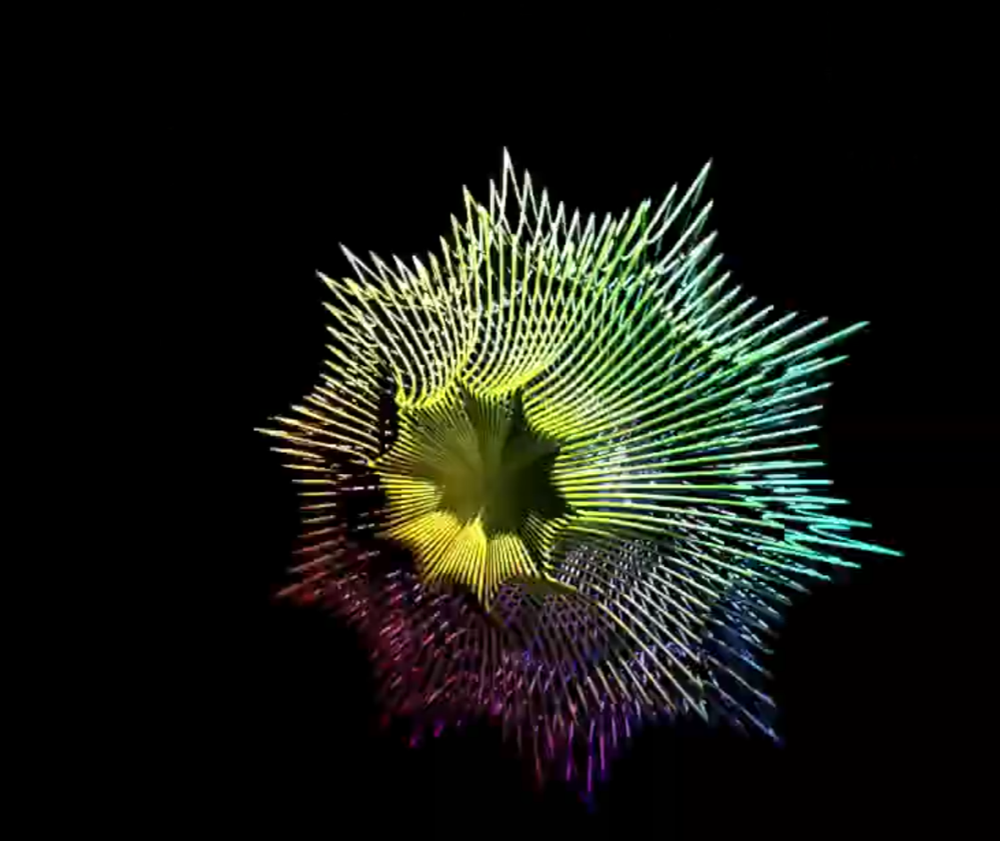
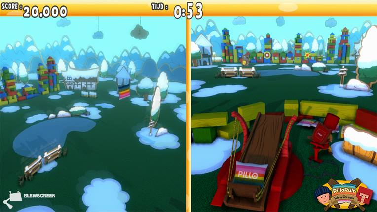

Portfolio Maurits Laanbroek
A technical artist specialized in procedural tools creation with 8+ years’ experience working on multiple big triple A games from Assassin greed to Farcry and assisting with development of procedural USD based pipelines from the Houdini's side. Practical problem solver and taking pride in making fast, stable and user-friendly tools.
Professional
Personal and school
-
Personal projects
 Personal projects, used for learning or for fun
-
School projects
 School and internship projects
© 2025 Maurits Laanbroek
•
Theme Moonwalk